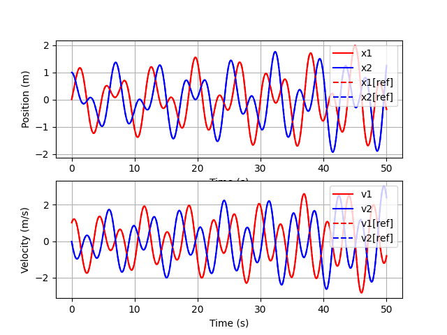

Note
Click here to download the full example code
Co-simulation.¶
Sometimes, we may want to simulate a system of several FMU models coupled together. TimeSteppingSystem allows to perform this co-simulation task.
from __future__ import annotations
from matplotlib import pyplot as plt
from gemseo_fmu.disciplines.fmu_discipline import FMUDiscipline
from gemseo_fmu.disciplines.time_stepping_system import TimeSteppingSystem
from gemseo_fmu.problems.fmu_files import get_fmu_file_path
Out:
/builds/gemseo/dev/gemseo-fmu/.tox/doc/lib64/python3.9/site-packages/gemseo/third_party/prettytable/prettytable.py:73: DeprecationWarning: invalid escape sequence \[
_re = re.compile("\033\[[0-9;]*m")
/builds/gemseo/dev/gemseo-fmu/.tox/doc/lib64/python3.9/site-packages/gemseo/third_party/prettytable/prettytable.py:1291: DeprecationWarning: invalid escape sequence \{
self.vertical_char = random.choice("~!@#$%^&*()_+|-=\{}[];':\",./;<>?")
/builds/gemseo/dev/gemseo-fmu/.tox/doc/lib64/python3.9/site-packages/gemseo/third_party/prettytable/prettytable.py:1292: DeprecationWarning: invalid escape sequence \{
self.horizontal_char = random.choice("~!@#$%^&*()_+|-=\{}[];':\",./;<>?")
/builds/gemseo/dev/gemseo-fmu/.tox/doc/lib64/python3.9/site-packages/gemseo/third_party/prettytable/prettytable.py:1293: DeprecationWarning: invalid escape sequence \{
self.junction_char = random.choice("~!@#$%^&*()_+|-=\{}[];':\",./;<>?")
/builds/gemseo/dev/gemseo-fmu/.tox/doc/lib64/python3.9/site-packages/networkx/utils/backends.py:135: RuntimeWarning: networkx backend defined more than once: nx-loopback
backends.update(_get_backends("networkx.backends"))
Let us consider a set of two mass-spring pairs connected to each other and modelled by two FMU models:
and
These models can be co-simulated by instantiating a TimeSteppingSystem:
system = TimeSteppingSystem(
(
get_fmu_file_path("MassSpringSubSystem1"),
get_fmu_file_path("MassSpringSubSystem2"),
),
50,
0.01,
)
and executing it from initial time to final time:
system.execute()
Out:
/builds/gemseo/dev/gemseo-fmu/.tox/doc/lib64/python3.9/site-packages/pydantic/main.py:593: DeprecationWarning: Conversion of an array with ndim > 0 to a scalar is deprecated, and will error in future. Ensure you extract a single element from your array before performing this operation. (Deprecated NumPy 1.25.)
return cls.__pydantic_validator__.validate_python(
{'k1': array([1.]), 'k2': array([1.]), 'm1': array([1.]), 'x2': array([1. , 0.9998 , 0.999401 , ..., 1.23494196, 1.2589736 ,
1.2589736 ]), 'k3': array([1.]), 'm2': array([1.]), 'x1': array([ 0.01 , 0.0201 , 0.030298 , ..., -0.35129848,
-0.35946757, -0.35946757]), 'time_step_id': array([1.000e+00, 2.000e+00, 3.000e+00, ..., 4.999e+03, 5.000e+03,
5.001e+03]), 'v1': array([ 1.01 , 1.0198 , 1.029396 , ..., -0.81690925,
-0.79753386, -0.79753386]), 'MassSpringSubSystem1:time': array([1.000e-02, 2.000e-02, 3.000e-02, ..., 4.999e+01, 5.000e+01,
5.000e+01]), 'v2': array([-0.02 , -0.0399 , -0.059695 , ..., 2.40316415,
2.37495232, 2.37495232]), 'MassSpringSubSystem2:time': array([1.000e-02, 2.000e-02, 3.000e-02, ..., 4.999e+01, 5.000e+01,
5.000e+01]), 'MDA residuals norm': array([1., 1., 1., ..., 1., 1., 1.])}
or with time stepping by setting do_step to False at instantiation.
For this particular example,
we also have a FMU model of the complete system:
reference = FMUDiscipline(
get_fmu_file_path("MassSpringSystem"), final_time=50, time_step=0.01
)
reference.execute()
Out:
/builds/gemseo/dev/gemseo-fmu/.tox/doc/lib64/python3.9/site-packages/pydantic/main.py:593: DeprecationWarning: Conversion of an array with ndim > 0 to a scalar is deprecated, and will error in future. Ensure you extract a single element from your array before performing this operation. (Deprecated NumPy 1.25.)
return cls.__pydantic_validator__.validate_python(
{'k1': array([1.]), 'k2': array([1.]), 'k3': array([1.]), 'm1': array([1.]), 'm2': array([1.]), 'v1': array([ 1. , 1.01 , 1.0198 , ..., -0.83587438,
-0.81690925, -0.79753386]), 'v2': array([ 0. , -0.02 , -0.0399 , ..., 2.43080622,
2.40316415, 2.37495232]), 'x1': array([ 0. , 0.01 , 0.0201 , ..., -0.34293973,
-0.35129848, -0.35946757]), 'x2': array([1. , 1. , 0.9998 , ..., 1.21063389, 1.23494196,
1.2589736 ]), 'MassSpringSystem:time': array([0.000e+00, 1.000e-02, 2.000e-02, ..., 4.998e+01, 4.999e+01,
5.000e+01])}
Then, we can compare the solutions graphically in terms of position and velocity of the two masses and note that for this example, the co-simulation of the two subsystems is equivalent to that of the complete system.
fig, (ax1, ax2) = plt.subplots(2, 1)
time_1 = system.local_data["MassSpringSubSystem1:time"]
time_2 = system.local_data["MassSpringSubSystem2:time"]
ax1.plot(time_1, system.local_data["x1"], label="x1", color="red")
ax1.plot(time_2, system.local_data["x2"], label="x2", color="blue")
ax2.plot(time_1, system.local_data["v1"], label="v1", color="red")
ax2.plot(time_2, system.local_data["v2"], label="v2", color="blue")
time = reference.local_data["MassSpringSystem:time"]
ax1.plot(time, reference.local_data["x1"], label="x1[ref]", linestyle="--", color="red")
ax1.plot(
time, reference.local_data["x2"], label="x2[ref]", linestyle="--", color="blue"
)
ax2.plot(time, reference.local_data["v1"], label="v1[ref]", linestyle="--", color="red")
ax2.plot(
time, reference.local_data["v2"], label="v2[ref]", linestyle="--", color="blue"
)
ax1.set_xlabel("Time (s)")
ax1.set_ylabel("Position (m)")
ax1.grid()
ax1.legend()
ax2.set_xlabel("Time (s)")
ax2.set_ylabel("Velocity (m/s)")
ax2.grid()
ax2.legend()
plt.show()

Total running time of the script: ( 0 minutes 16.382 seconds)
Download Python source code: plot_basic.py